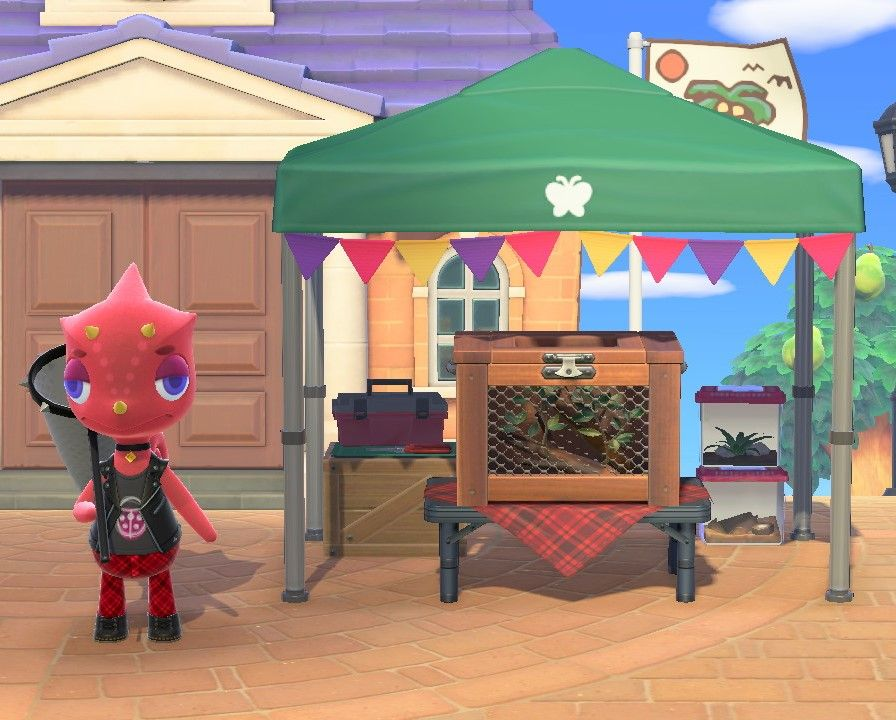
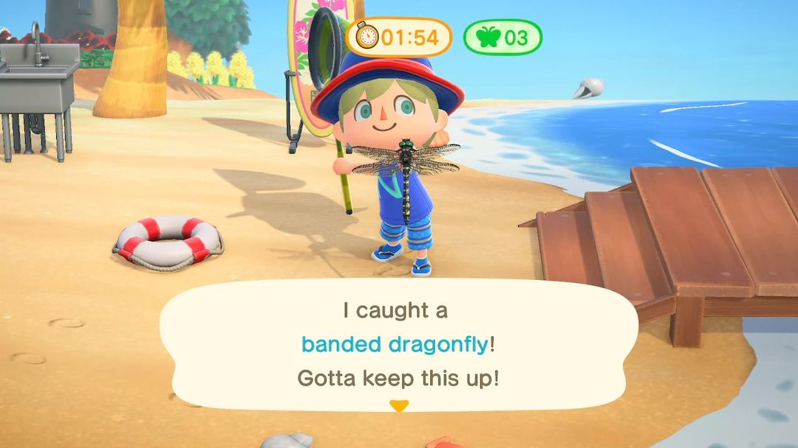
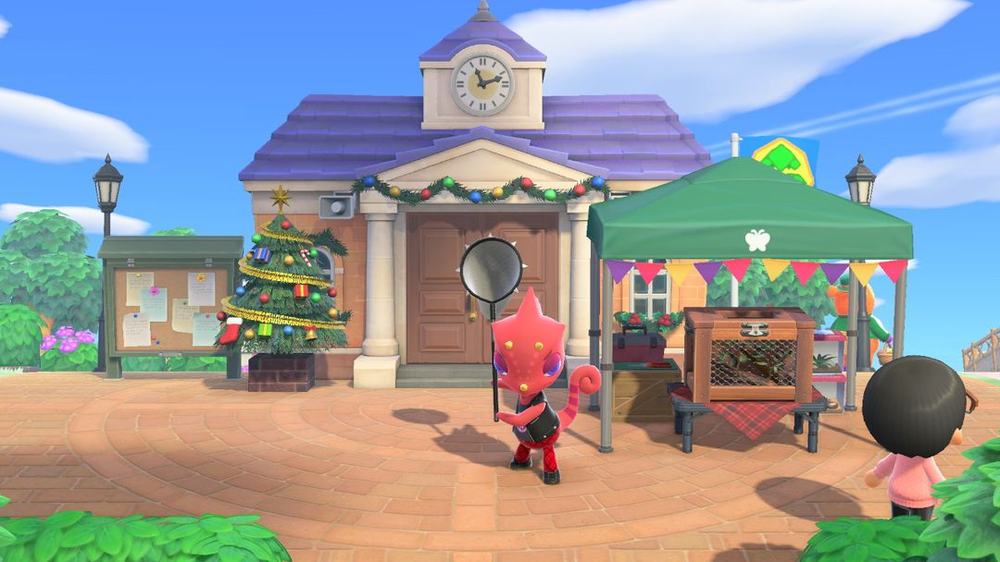

捕虫大赛：南北半球哪天办、怎么计分
龙克斯每年来四次，北半球在 6～9 月，南半球在 11～2 月
捕虫大赛由龙克斯主办，每年夏天在岛上办四场。规矩很简单：3 分钟里拿捕虫网能抓多少抓多少，一只虫 1 分，不看稀有度，攒够分数就能找龙克斯换虫子主题的家具和衣服，分数累计够了还会寄来奖杯。
南北半球的夏天错开，所以北半球在 6～9 月，南半球在 11～2 月。比赛当天只要有空就能一局接一局地刷，要是能约上别的岛的朋友一起比，分数涨得快不少。下面先说哪天办，再说怎么计分、怎么多抓几只。
01哪天办
捕虫大赛挑当地的夏天办，南北半球的月份因此不一样，日子都按「当月第几个周六」来算：
| 半球 | 月份 | 日子 |
| 北半球 | 6、7、8、9 月 | 每月第四个周六 |
| 南半球 | 11、12、1、2 月 | 每月第三个周六 |
一季办完要隔好几个月才轮到下一季：北半球 9 月那场办完，就要等到第二年 6 月；南半球则是 2 月办完，等到 11 月。想刷奖品、冲奖杯的话，每季那四场最好都别错过。具体是哪一天，可以翻动森圈圈的活动日历。比赛前一周左右，服务处旁边的布告栏也会贴出通知，每季最后一场的通知上会写着「本季最后一次」。
比赛当天，龙克斯会在服务处前的广场支起帐篷。上午 9 点开始报名，下午 6 点截止；他会一直待到晚上 8 点，截止以后这段时间还能找他卖虫、换奖品。

比赛当天，龙克斯在服务处前的广场等你（图：Nookipedia）
02报名和计分
找龙克斯报名就能开局，当天第一局免费，之后每局 500 铃钱。下午 6 点前想报几次就报几次，次数不限，所以只要铃钱够，可以一直刷到截止。
一局 3 分钟。抓到的虫会直接放进帐篷下的虫虫观察箱，口袋满了也不碍事，身上带一把捕虫网就够了。
计分是一只虫 1 分，白粉蝶和红颈凤蝶算的分一样多，稀有的虫不会多给分。一局里抓到 3 只以上，再额外加 2 分。也就是说，与其满岛去找稀有的虫，不如见一只抓一只。
每局结束以后，得先把观察箱清空才能开下一局。清空有两种办法：把虫卖给龙克斯，他按 Nook商店价钱的 1.5 倍收；或者把想要的挑出来自己带走。

比赛中，屏幕上方是剩余时间和已经抓到的只数（英文版画面）（图：Nookipedia）
小提示博物馆里还没有的虫，卖之前先从观察箱里挑出来带走，不然会跟着其他虫一起卖掉。
03和朋友一起比
有别的岛的客人一起参加时，龙克斯不收报名费。只要其中一个人报了名，所有人就同时开始计时，而且开局前没有提醒，所以大家最好先把网拿在手上、站好位置再报名。
除了各自抓的分数，这一局所有人抓到的虫还会加在一起算，凑够数每人都能多拿一份加分：
| 大家一共抓到 | 每人额外加 |
| 5～9 只 | 5 分 |
| 10～14 只 | 7 分 |
| 15 只以上 | 10 分 |
三四个人一起，一局凑满 15 只不难，每人直接多拿 10 分。一个人刷的时候，一局抓到 3 只以上也只多 2 分，差别一下就出来了，又不用交报名费，有朋友能约就尽量约。
注意只要有一个人的观察箱没清空，下一局就开不了，每局结束后记得互相催一下。联机中途有人断线的话，那一局抓到的可能不算数。
04怎么抓得多
3 分钟很短，能抓多少主要看开局前准备得怎么样。下面几条是常用的做法：
提前种花、浇水。蝴蝶爱围着花丛飞，比赛前几天把岛上的花种起来、浇上水，当天花丛边的蝴蝶就多。
盯着树干找。夏天树干上趴着蝉，位置固定，一眼就能找到，走近的时候放慢脚步。
按住 A 慢慢走。拿着捕虫网时按住 A 会踮着脚走，不容易把虫吓跑。
先把路线想好。比赛前在岛上转一圈，记住哪几片花丛、哪几棵树上有虫，开局后顺着一路抓过去，别在路上来回绕。
多带一把网。比赛里网不会坏，但耐久照样在扣，一局结束时可能刚好断掉，备一把省得回家去拿。

南半球的捕虫大赛在 11～2 月，12 月那场广场上还摆着圣诞树（图：Nookipedia）
05奖品和奖杯
攒到 10 分就能找龙克斯换一件奖品。奖品一共 13 种，随机给，13 种都拿过一遍之后才会出重复的。用不完的分数会留着，下一场接着用。
13 种奖品是：蚂蚁观察箱、虫虫观察箱、蚂蚁窝、蜘蛛门牌、蜘蛛网、玩具蜈蚣、玩具蟑螂、虫虫夏威夷衬衫、蝴蝶双肩包、瓢虫雨伞、蝴蝶壁纸、瓢虫地毯、虫子棒。其中虫子棒是一根魔法棒，挥一下就能换上衣柜里存好的一套衣服。
奖杯不用拿分去换。分数累计到 100、200、300 分，龙克斯会分别寄来虫类铜奖杯、虫类银奖杯、虫类金奖杯，以前几场攒的分也都算在里面，所以每一场都能往奖杯上添一点。
从左到右：虫类铜奖杯、银奖杯、金奖杯（图：Nookipedia）
动森圈圈 · 小程序和 iOS App 都搜「动森圈圈」